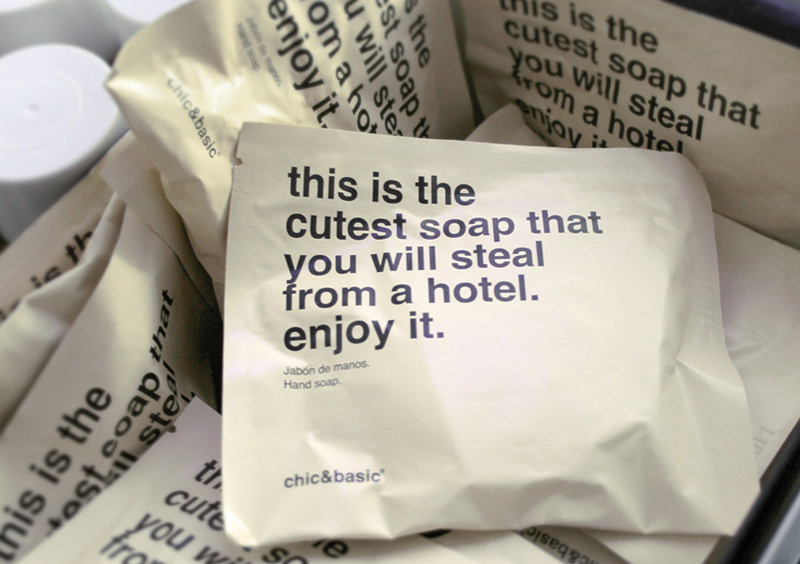

COMO ESCOLHER A MALA PERFEITA PARA A SUA VIAGEM
COMO ESCOLHER A MALA PERFEITA PARA A SUA VIAGEM
Saiba como viajar sem precisar se preocupar com sua bagagem
60 FILMES SOBRE VIAGENS ONDE PROCURAR INSPIRAÇÃO
Talvez essas obras do cinema te ajudem a escolher seu próximo destino

O QUE PODEMOS, OU NÃO, LEVAR DE UM QUARTO DE HOTEL?
Um assunto polêmico que pode ser muito esclarecedor para turistas de primeira viagem